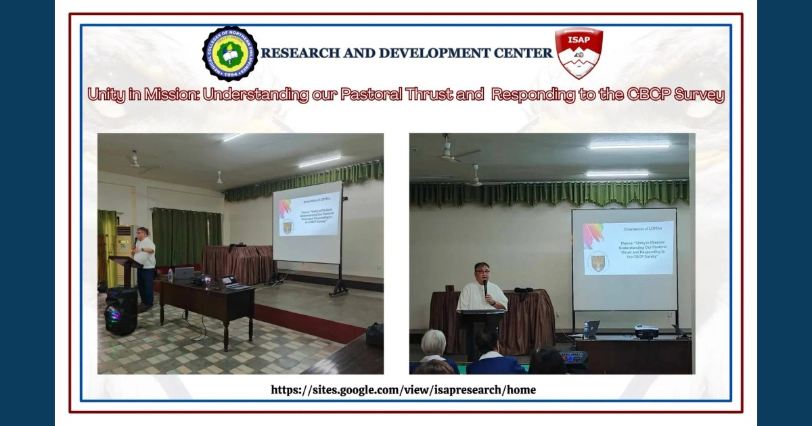

RDC Joins CBCP-UST Collaborative Project on Catholic Christianity

The MCNP-ISAP Research and Development Center, led by Research Director Ryan C. Fontanilla, participated in the CBCP and University of Santo Tomas project at the Archbishop's Residence in Tuguegarao City.
Read full article